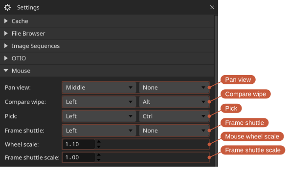
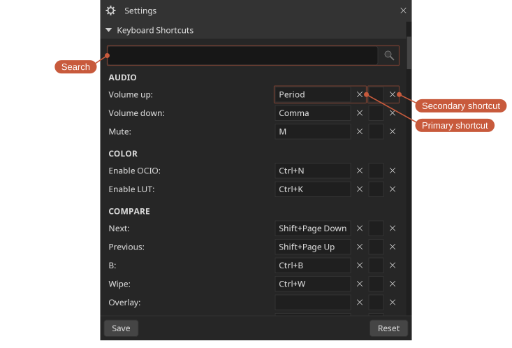
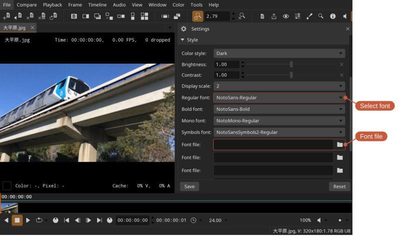

Settings
Locations: Tools menu, Tools toolbar
Shortcut: F10
Settings are stored as a JSON file in the Documents/DJV directory.
The Settings tool is divided into collapsible sections:
- Cache — Memory cache sizes for video, audio, and read-behind (see Files).
- File Browser — Whether to use the native or built-in file browser, and whether the built-in one opens in a window of its own (see Files).
- Image Sequences — How audio is paired with image sequences, and what happens where a sequence is missing frames (see Files).
- OTIO — How the spatial coordinates in OTIO files are used to size and position images, and whether to enable workarounds for timelines that do not conform exactly to specification (see Files).
- Mouse — Mouse button bindings and scaling (see below).
- Playback — Options such as whether playback starts automatically when a file is opened.
- Audio — The size of the buffer the audio device is given. Increase this if the audio breaks up during playback.
- Keyboard Shortcuts — All keyboard shortcuts (see below).
- Style — Interface scale and custom fonts (see below).
- Time — Default time units (frames or timecode).
- FFmpeg — Built-in FFmpeg decoding options.
- FFmpeg Command — Where to find the external FFmpeg command, used for what the packaged FFmpeg cannot decode (see Files).
- USD — Options for the experimental USD renderer.
- Miscellaneous — Less common options, such as whether the setup dialog is shown at startup.
Use the button at the bottom of the tool to save the settings manually.
Mouse

The Mouse section maps mouse buttons (and optional modifier keys) to different actions.
Keyboard shortcuts

To set a shortcut, click its widget and press the new key combination. The widget turns red if the chosen combination conflicts with an existing shortcut. Each action can have a primary and a secondary shortcut, and the search box helps find an action by name.
Font support
Custom fonts can be added in the Style section of the Settings tool.
To use custom fonts, first add the font files and then select them for use.
DJV includes NotoSansCJKsc-Regular for basic CJK rendering.
